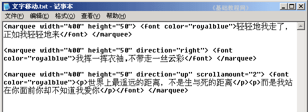

HTML 基础入门教程
八、文字移动 返回
记事本是一个小巧的文本编辑器，可以用它来完成代码的输入，保存成网页以后用浏览器来查看，下面我们来看一个练习；
1、启动记事本
1）点击“开始－所有程序－附件－记事本”；
2）记事本的窗口主要包括标题栏、菜单栏、工作区，左上角有一个一闪一闪的光标插入点竖线；

3）点菜单“文件－保存”命令，以“文字移动.html”为文件名，类型为“所有文件”，保存文件到自己的文件夹，注意文件名后缀为英文字母；
2、输入内容
1）在工作区中输入下列内容，也可以复制一下，里面的汉字可以自己修改：

<marquee width="400" height="50"> <font color="royalblue">轻轻地我走了，正如我轻轻地来</font> </marquee>
这儿的marqee就是移动标签，width和height是区域，效果应该是：
2）按两下回车键，接着输入下列内容，或者复制一下也可以：
<marquee width="400" height="50" direction="right"> <font color="royalblue">我挥一挥衣袖,不带走一丝云彩</font> </marquee>
marquee后面的direction是移动方向，这儿是右，效果应该是：
3）按Ctrl＋S组合键保存一下文件，按两下回车键继续输入下面内容；

<marquee width="400" height="50" direction="up" scrollamount="2"> <font color="royalblue"><p>世界上最遥远的距离，不是生与死的距离</p><p>而是我站在 你面前你却不知道我爱你</p></font> </marquee>
这儿的scrollamount是速度，也可以减慢一些，效果是：
按Ctrl＋S组合键保存一下文件，在自己的文件夹中找到“文字移动”文件，双击打开，看一下页面效果；
本节学习了设置文字移动的效果，如果你成功地完成了练习，请继续学习下一课内容；
本教程由86团学校TeliuTe制作|著作权所有
基础教程网：http://teliute.org/
美丽的校园……
转载和引用本站内容，请保留版权信息和本站链接。